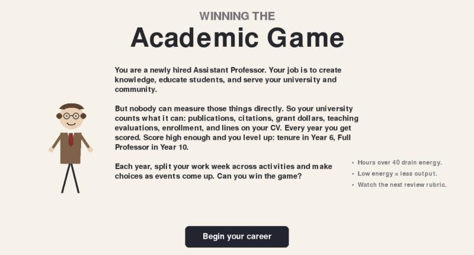
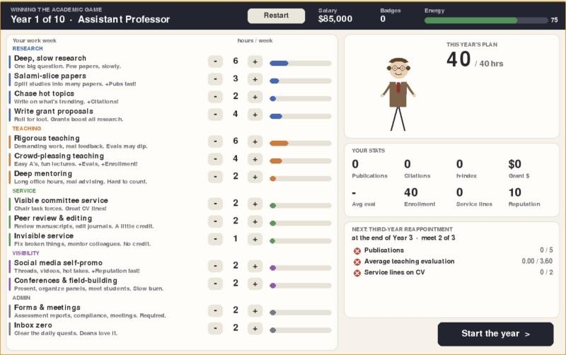

This page is a place for the apps and games I have been building. Some of them are tools for language teachers and others are games that try to make an argument. I will add more here as they are ready to share.

In the past ten years anyone working at a university can tell you that general morale and belief in the academic institution is on the decline. The job market, publishing, peer review, public trust, and student literacy all seem to be failing at the same time. I have been arguing that these are not separate problems. They are the predictable outcome of one process, the gamification of the academy through what the philosopher C. Thi Nguyen calls value capture.
“Value capture does not happen through coercion. It happens through seduction. A metric is offered as a convenient shorthand for something that matters and it is, initially, a reasonable shorthand.”
A letter grade stands in for what a student learned. An impact factor or an h-index stands in for whether a scholar’s work matters. Over time the proxy replaces the thing it was meant to represent. We stop asking whether we are doing good work and start asking whether our numbers are going up.
“These metrics do not measure scholarly value. They measure scholarly legibility, the degree to which a scholar’s output is visible within the citation economy. And once scholars understood that their careers depended on these numbers, they optimized for them.”
I have written about this, but I am a games researcher, and it seemed fitting to make the argument as a game. Games are very good at teaching you to chase points. The idea was to build one where chasing the points works, and then show you at the end what it cost.
You play a newly hired Assistant Professor over a ten year career. Each year you split your work week across activities like deep research, salami-slicing papers, rigorous or crowd-pleasing teaching, mentoring, peer review, invisible service, and social media self-promotion. Events come up along the way (reviewer #2, an editorship offer, AI-drafted papers, donuts on evaluation day) and you only see the “game” effects of each choice. The university scores you on what it can count: publications, citations, grant dollars, teaching evaluations, and lines on your CV. You go up for reappointment in Year 3, tenure in Year 6, and Full Professor in Year 10.

A hidden second scorecard tracks what the job is actually for: knowledge created, student learning, real service, and your own wellbeing. It is revealed at the end. In testing, players who purely game the metrics reach tenure almost every time while having very little real impact, and players who try to do the job well often do not make it.
At the start you also choose who your professor is. Identity does not change what you are able to do, but it does change how the system responds to what you do, following patterns documented in published research on teaching evaluations, citations, grant funding, and service loads. With identical choices, a balanced career reaches tenure about 23% of the time as a white man and about 14% as a Black woman. The effects and their sources are listed at the end of the game.
The game does not offer a fix, but the essay it came from ends with three: professionalizing peer review, unbundling the faculty role into research, teaching, and bridge tracks, and reclaiming evaluation from metrics.
“The problems are the result of a system that has made it structurally difficult to do good work. Value capture does not require bad actors. It only requires metrics.”
“The game, as currently played, has no winner. Only an institution brave enough to stop playing it has any chance of remembering what it was supposed to be for.”
The game takes about 20-30 minutes and runs in the browser on a computer or a phone (it takes about 15 seconds to load).
References
Hilpert, M. (2024). Academia is broken [Video]. YouTube.
Nguyen, C. T. (2021). Games: Agency as art. Oxford University Press.